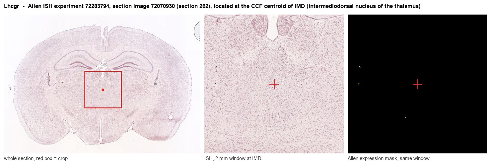
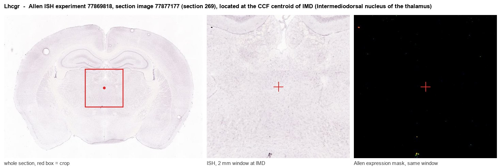
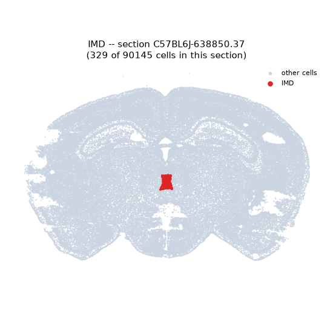
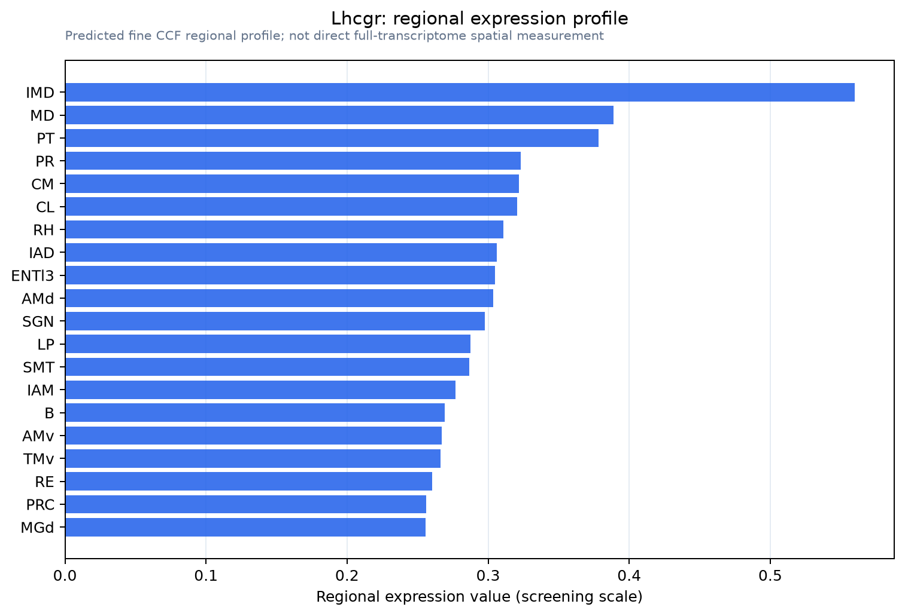

Lhcgr
Lutropin-choriogonadotropic hormone receptor (LH/CG-R) (Luteinizing hormone receptor) (LSH-R)
Spatial tier: REGION_BIASED · Class: GPCR · Top region: IMD (Intermediodorsal nucleus of the thalamus) · Positive regions: 30/554
Function in IMD: evidence, prediction, innovation
- Gene function
- LHCGR encodes the luteinizing hormone/chorionic gonadotropin receptor, a class A GPCR with a large leucine-rich extracellular domain binding LH and hCG. Ligand binding drives Gs-adenylyl cyclase-cAMP-PKA signalling and, at higher occupancy, Gq and beta-arrestin pathways. Its canonical role is gonadal steroidogenesis, but low-level brain expression has been linked to neuronal plasticity and cognition.
- Region function
- The intermediodorsal nucleus is a midline thalamic nucleus linked to prefrontal, insular and cingulate cortex and amygdala; Dong et al. 2019 identified it as a pro-freezing node whose inhibition switches defence to flight.
- Published in this region
- none No region-specific literature found. The closest data are Ryu et al. 2022, whose single-transcript RNAscope atlas found the highest thalamic Lhcgr density in the subcommissural organ rather than any midline nucleus, and Blair et al. 2019, who showed intracerebroventricular hCG restores spine density and spatial memory after ovariectomy; Allen ISH gives Lhcgr background-level signal in IMD (energy 0.0-0.06).
- Predicted function
- Prediction: any LHCGR on IMD neurons would act as a slow, cAMP-raising modulator biasing midline thalamic excitability with reproductive state, a route by which gonadal hormone status shifts the freeze-versus-flight balance. hCG infusion into IMD would then raise excitability and freezing under looming threat. Given near-zero measured expression, the stronger prediction is that no such effect exists.
- Innovation
- ★★★★★ 5/5 Nobody has studied a gonadotropin receptor in midline thalamus, but the very low expression means the target may not be real.
- Tools
- LuRKO Lhcgr-null mice and floxed alleles; recombinant hCG and LH as agonists; Lhcgr RNAscope probes validated against knockout tissue (Ryu 2022); no reliable Lhcgr-Cre line or brain-penetrant antagonist.
- References
Direct evidence located at the region

Allen ISH experiment 72283794, section image 72070930 (section 262): the section that contains the CCF centroid of Intermediodorsal nucleus of the thalamus according to the Allen image-to-atlas alignment (reference_to_image), with a 2 mm window around that point. Left: whole section, red box = window. Middle: ISH signal. Right: Allen's expression-mask view of the same window. open this image in the Allen viewer

Allen ISH experiment 77869818, section image 77877177 (section 269): the section that contains the CCF centroid of Intermediodorsal nucleus of the thalamus according to the Allen image-to-atlas alignment (reference_to_image), with a 2 mm window around that point. Left: whole section, red box = window. Middle: ISH signal. Right: Allen's expression-mask view of the same window. open this image in the Allen viewer
Direct spatial evidence

Regional expression figure

Predicted WMB × fine-CCF profile; not direct full-transcriptome spatial measurement.
Spatial profile
Evidence and specificity
- Evidence status
- PREDICTED_FINE
- Direct sources
- None; predicted localization only
- Exclusive threshold
- 12 positive regions out of 554
- Spatial specificity
- 0.303
- Top-region fraction
- 0.055
- Filter status
- PASS
Interpretation limits
- Cell-type-to-region projection is imputed expression, not direct spatial measurement.
- Adult reference atlases do not establish stability across age, sex, strain, state, or disease.
- Transcript abundance does not guarantee protein abundance or genetic-tool performance.